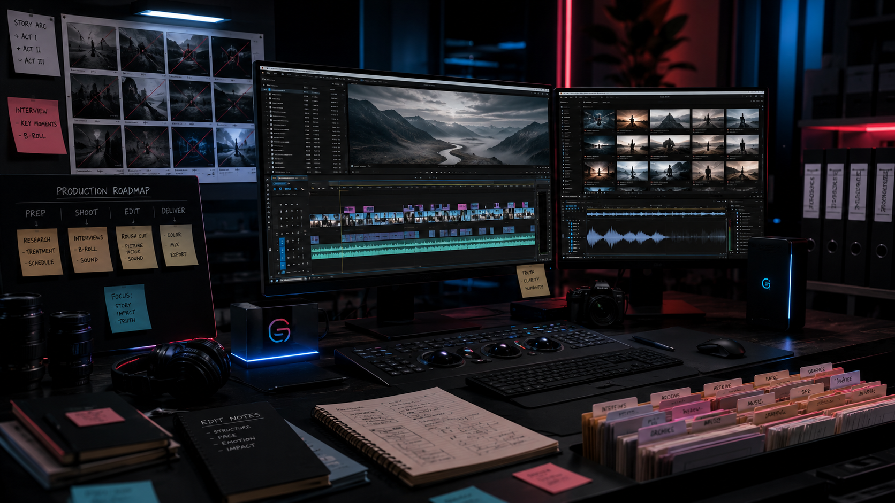

Research Zone
Source collection, note-taking, timeline building, cross-reference এবং background research-এর workspace।
SalimGPT-এর studio বলতে শুধু একটি physical room বা কয়েকটি device বোঝায় না। এটি research, script, AI-assisted voice ও visual production, media organization, editing, quality control এবং final publication—সবকিছুকে যুক্ত করা একটি সম্পূর্ণ digital production environment।

Documentary production-এ hardware গুরুত্বপূর্ণ, কিন্তু production quality কেবল device-এর ওপর নির্ভর করে না। Research material কোথায় থাকবে, script কীভাবে version করা হবে, voice ও visual file কীভাবে সংগঠিত হবে, editing-এর সময় কোন asset কোথায় পাওয়া যাবে এবং final review কীভাবে সম্পন্ন হবে—এসবও studio workflow-এর অংশ।
SalimGPT-এর production environment তাই একটি connected digital workspace হিসেবে ভাবা হয়। Research থেকে final export পর্যন্ত প্রতিটি stage যেন আগের stage-এর সঙ্গে পরিষ্কারভাবে যুক্ত থাকে—এটাই মূল উদ্দেশ্য।
Organized research + controlled production + final human review = consistent documentary.একই production environment-এর মধ্যে কয়েকটি আলাদা কাজের zone থাকে। প্রতিটির উদ্দেশ্য আলাদা হলেও final documentary তৈরির সময় এগুলো একে অপরের সঙ্গে যুক্ত।
Source collection, note-taking, timeline building, cross-reference এবং background research-এর workspace।
Research material থেকে narrative structure, chapter flow, hook, explanation ও final script তৈরি।
Final script অনুযায়ী synthetic narration, pacing, pronunciation ও delivery প্রস্তুত করার production stage।
AI-generated visual, image, illustrative footage, archive, map ও graphic প্রস্তুত করা।
Narration, footage, graphics, visual timing ও sound-কে একটি coherent timeline-এ সাজানো।
Fact, voice, visual context, pacing, technical issue এবং final presentation পুনরায় পরীক্ষা।
একটি documentary-এর editing শুরু হওয়ার অনেক আগেই production শুরু হয়ে যায়। Topic research, source collection, chronology, factual note এবং গুরুত্বপূর্ণ claim চিহ্নিত করার সময়ই documentary-এর foundation তৈরি হয়।
Research workspace-এর লক্ষ্য হলো যত বেশি সম্ভব tab খুলে রাখা নয়; বরং কোন source কী তথ্য দিচ্ছে, কোন তথ্যটি গুরুত্বপূর্ণ, কোথায় conflict আছে এবং কোন claim আরও verification চায়—তা পরিষ্কার রাখা।
একটি বিষয় নিয়ে বিভিন্ন source থেকে পাওয়া তথ্যকে একই জায়গায় সংগঠিত করলে script writing-এর সময় factual consistency বজায় রাখা সহজ হয়।
Video editor-এর timeline-এ scene বসানোর আগে documentary-এর conceptual timeline script-এর মধ্যে তৈরি হয়। কোন তথ্য আগে আসবে, কোন প্রশ্ন পরে answer হবে, কোথায় historical context প্রয়োজন এবং কোথায় visual explanation দরকার— script stage-এই তা নির্ধারণ করা হয়।
Research note এবং final script আলাদা রাখা production discipline-এর একটি গুরুত্বপূর্ণ অংশ। Research material documentary-এর source base; final script হলো সেই material-এর নতুন ও সংগঠিত presentation।
Script locked হওয়ার পর voice ও visual production তুলনামূলকভাবে বেশি structured হয়ে যায়, কারণ তখন প্রতিটি paragraph-এর narrative purpose পরিষ্কার থাকে।
SalimGPT-এর documentary-তে AI-generated বা synthetic voice ব্যবহার করা হতে পারে। Voice তৈরি করার আগে script final করা হয়, যাতে narration-এর factual content এবং editorial direction আগে থেকেই নির্ধারিত থাকে।
Voice output-এর ক্ষেত্রে pronunciation, sentence break, pause, pacing এবং emphasis বিবেচনা করা হয়। প্রয়োজন হলে একই অংশ পুনরায় তৈরি বা adjust করা হতে পারে।
অর্থাৎ voice generation automated হতে পারে, কিন্তু কোন শব্দ বলা হবে এবং documentary-এর message কী হবে—সেটি production-এর মানবিক editorial control-এর অধীনে থাকে।

Documentary production-এ প্রচুর image, footage, voice file, graphics এবং research material তৈরি হতে পারে। এগুলো যদি সংগঠিত না থাকে, editing-এর সময় ভুল asset ব্যবহার বা অপ্রয়োজনীয় duplication-এর ঝুঁকি বাড়ে।
এই কারণে SalimGPT-এর production workflow-এ asset organization গুরুত্বপূর্ণ। Scene অনুযায়ী visual, narration অনুযায়ী voice segment এবং প্রয়োজনীয় graphic আলাদা production role অনুযায়ী রাখা হয়।
লক্ষ্য হলো editing-এর সময় creator যেন asset খোঁজার পরিবর্তে storytelling decision-এ বেশি মনোযোগ দিতে পারেন।
Documentary-এর সব scene একইভাবে তৈরি হয় না। Scene-এর উদ্দেশ্য অনুযায়ী visual source ও production method পরিবর্তিত হতে পারে।
Historical, conceptual বা explanatory scene-এর জন্য AI-generated image।
সরাসরি footage না থাকলে narration বোঝাতে illustrative motion scene।
প্রয়োজন অনুযায়ী archival, public-domain বা বৈধভাবে ব্যবহারযোগ্য material।
স্থান, যুদ্ধ, migration, route বা geographical context বোঝানোর visual।
Data, comparison, timeline ও complex explanation সহজ করার graphic।
Crop, framing, timing, composition বা motion পরিবর্তন করে narrative-এর সঙ্গে মানানো।
Editing-এর সময় documentary-এর technical এবং editorial layer একসঙ্গে কাজ করে। একটি clip সুন্দর কি না—এর পাশাপাশি সেটি narration-এর সঙ্গে সঠিক context তৈরি করছে কি না তাও গুরুত্বপূর্ণ।
Scene duration, cut timing, graphic placement, voice pause এবং visual transition-এর মাধ্যমে দর্শক কখন কোন তথ্য দেখবেন এবং শুনবেন— তা নিয়ন্ত্রণ করা হয়।
SalimGPT-এর editing approach-এর লক্ষ্য হলো দ্রুত pacing এবং comprehension-এর মধ্যে ভারসাম্য তৈরি করা। দর্শককে ধরে রাখা গুরুত্বপূর্ণ, কিন্তু তথ্য বোঝার জন্য প্রয়োজনীয় সময়ও দিতে হয়।
Notes, source ও reference material।
Draft, revision ও final production script।
Narration segment ও revised audio।
Generated, edited ও contextual visual।
AI footage, archive ও motion asset।
Maps, charts, titles ও explainers।
Timeline ও editing project data।
Review ও final publication files।
প্রথম export-এর পর documentary আবার review করা হয়। এই পর্যায়ে শুধু editing mistake নয়, factual inconsistency, wrong visual context, narration problem এবং pacing issue-ও খুঁজে দেখা হয়।
কোনো visual narration-এর তথ্যের সঙ্গে ভুল impression তৈরি করছে কি না, কোনো sentence অতিরিক্ত দ্রুত চলে গেছে কি না, অথবা কোনো scene-এ প্রয়োজনীয় context অনুপস্থিত কি না—এসব final review-এর অংশ।
প্রয়োজন হলে সংশোধনের পর আবার export করা হয়। Publish-ready file বলতে শুধু technically playable file নয়; editorially reviewed documentary-কে বোঝানো হয়।
গুরুত্বপূর্ণ তথ্য আবার দেখা।
Pronunciation ও pacing পরীক্ষা।
Scene context সঠিক কি না।
Volume ও unwanted issue দেখা।
Scene flow ও information speed দেখা।
Final output সম্পূর্ণ পরীক্ষা।
SalimGPT কোনো নির্দিষ্ট software, AI model বা device-কে documentary quality-এর একমাত্র ভিত্তি মনে করে না। Technology দ্রুত বদলায়; আজকের production tool ভবিষ্যতে অন্য tool দিয়ে প্রতিস্থাপিত হতে পারে।
কিন্তু research discipline, original script, visual context, controlled editing এবং final human review—এই production principles tool পরিবর্তনের সঙ্গে বদলানোর কথা নয়।
Technology-এর কাজ production-কে শক্তিশালী করা; documentary-এর editorial judgement প্রতিস্থাপন করা নয়।
SalimGPT-এর production workflow-এ AI research assistance, language support, synthetic voice, image generation, illustrative footage এবং অন্যান্য technical কাজে ব্যবহৃত হতে পারে।
তবে কোন তথ্য final script-এ থাকবে, কোন visual ব্যবহার হবে, কোন interpretation যুক্ত হবে এবং documentary publish করা হবে কি না— এসব বিষয়ে final creative ও editorial control মানুষের অধীনে থাকে।
SalimGPT-এর AI নীতিSalimGPT-এর research direction, script development, visual planning, editing decision এবং final publication-এর overall creative ও editorial control পরিচালনা করেন Mohammad Salim।
Studio-এর কাজ তাই শুধু technical execution নয়; প্রতিটি technical decision যেন documentary-এর research এবং narrative purpose-এর সঙ্গে যুক্ত থাকে—সেটিও production direction-এর অংশ।
পরিচালক সম্পর্কে জানুনSalimGPT-এর production environment এমনভাবে সংগঠিত করার লক্ষ্য রাখা হয়, যাতে research, script, voice, visual, editing এবং review আলাদা কাজ হয়েও final documentary-তে একটি unified identity তৈরি করে।
ভালো production-এর উদ্দেশ্য শুধু polished video তৈরি করা নয়। দর্শক যেন বিষয়টি বুঝতে পারেন, তথ্যের প্রেক্ষাপট অনুসরণ করতে পারেন এবং documentary-এর শেষ পর্যন্ত একটি coherent story পান—সেটিই মূল লক্ষ্য।
SalimGPT — গবেষণা থেকে গল্প, গল্প থেকে জ্ঞান।